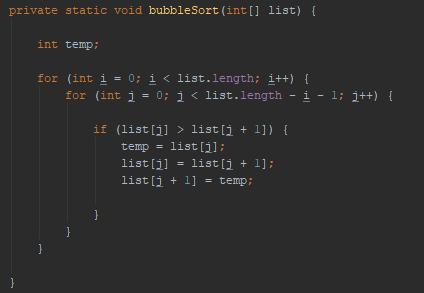

What is a Bubble Sort?
Bubble sort which gets it's name from the way elements 'bubble' up to their position is one of the first
sorting algorithms that a lot of people learn, this is due to it's simple implementation. However, it is
very rarely the best sort for the job. For each pass the bubble sort iterates through each element in the
collection, swapping adjacent elements if they are out of order. The bubble sort can be improved by making
it not check the already sorted elements (The length of the collection - the number of passes done), also
by making it that if a pass completes without any swaps taking place then the sort ends as the elements
must be sorted.
Bubble sort has a big O complexity of O(n2)
| Pros: | Cons: |
|---|---|
|
|
Code Snippet
